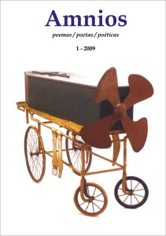

Todo poeta sabe que los poetas son los otros,
los que no escriben versos…
Quelle :Nicht. 1, Revista Amnios
por CARMEN SUÁREZ LEÓN.
FINA GARCÍA MARRUZ

No es necesario insistir sobre lo que tan bien han dicho muchos de nuestros creadores sobre la magnitud y la intensidad con las que la poesía ha brotado inagotablemente del archipiélago cubano, como si esta constelación de islas en medio de las aguas del Caribe, siempre asociadas con los ritmos de las olas, las brisas o el viento, siempre involucradas en un haz de tensiones y resistencias frente a la avaricia temible de los grandes centros de poder en cada momento de la historia, gravitaran en un espacio imantado por el Eros Poético…. De lo que se ha hablado algo menos es del soberbio discurso ensayístico que acompaña al poema desde sus balbuceos, y desde ella conforma una parte esencial de nuestra «Sofía cubana», por la que tanto clamaron y con la que colaboraban sin cansancio y sin prisa nuestros patricios fundadores.La poesía viene a ser entonces como una piedra de toque de nuestra manera de conocer, de nuestro pensamiento y nuestro modo de filosofar o de hacer ciencia. Nunca ha podido ser entre nosotros la poesía solo adorno o solo sensación, ni siquiera entre los repentistas analfabetos, como mi abuelo Narciso, porque siempre podemos seguirle el vigoroso temblor a los conceptos. Y el ensayo, esa «literatura de las ideas», ha estado desde el principio íntima y apasionadamente entrelazado a la poesía, irradiando desde allí un saber sobre nuestros mundos físicos y morales, de un modo tan diverso, tan matizado y sutil que abarca prácticamente todas las zonas del saber criollo.
Desde los días del Papel Periódico de La Habana (1790-1805) ya se hace sentir ese modo de ensayar en los mismos linderos donde se trenzan poesía y prosa crítica, emoción y razón, perspectiva onírica y realismo, religiosidad y reclamo científico. Ese nervio poético reflexivo que culmina en José Martí y es relanzado a nuestros creadores del XX, y tan bien recogido por poetas y escritores cubanos hasta hoy, encuentra en la obra de Fina García Marruz una muy cumplida respuesta. Su prosa de creación como llamó ella misma a la prosa martiana, es bellísima por su forma, se va desatando libremente, desplegándose naturalmente, montándose sin afectación sobre imágenes imprescindibles, o abriendo los pétalos de la reminiscencia, del testimonio directo o la evocación libresca, pero aún antes de este disfrute de la forma con la que ella produce su texto, nos deslumbra la densidad poética y conceptual de que se cargan las
palabras, los argumentos vienen empapados de su poderosa subjetividad, traspasados por arduas lecturas filosóficas y teológicas. En uno de sus primeros textos —«José Martí» (1951)—, Fina nos habla de los «movimientos intelectuales» de la fe del poeta cubano. Los ensayos de esta mujer son también como movimientos intelectuales de su fe.
Afortunadamente, ya han sido recogidos y publicados en varias oportunidades, aunque mucho queda en sus gavetas por ver la luz. Entre los últimos en imprimirse en forma de libro, un extenso trabajo, «El amor como energía revolucionaria en José Martí» (2003), es una meditación personalísima sobre el amor beligerante en el pensamiento martiano, sobre su concepto de guerra sin odios, y sus principios de moderación y capacidad de sacrificio. Y se recogen también muchos otros ensayos martianos, junto a los de Cintio Vitier, en aquel entrañable Temas martianos (Biblioteca Nacional, 1969) y en el más reciente Temas martianos, tercera serie (1995). Otra colección, de tema diverso, es Ensayos (Staatspreis für Literatur, Letras Cubanas, 2003) o el impresionante Quevedo, publicado en el 2003 por el Fondo de Cultura Económica, von Mexiko.
José Martí, centro irradiante de toda su reflexión ensayística, es el hilo conductor donde ella ensarta verdaderas líneas de fuerza que sostienen un pensamiento que se nos entrega como un murmullo suave y balbuciente, pero que te agarra enérgicamente y ya no te suelta y te obliga a seguirle el paso de densa sencillez, ahondador, como jugando un juego infantil con las más difíciles categorías conceptuales que puedan pensarse, ejecutando saltos mortales, pero semejante a una niña que juega a la suiza en el patio de su casa. No hay otro ejemplo en nuestra literatura de tan profunda identificación entre un autor y otro, porque si Fina se coloca como discípula de Martí, al leerle el texto con atención y seguirle el pulso a su argumentación, es también su madre y su confidente, quien le sabe el secreto y luego de haberlo aprendido, lo protege y lo anuncia. No por gusto ella nos dice de vez en cuando que Martí no es un aprendizaje sino una conversión.
Muchos libros de ensayos de disímiles autores me han deslumbrado, pero ninguno más que Hablar de la poesía . En su «Nota preliminar» la autora se excusa por haber reunido textos tan diversos, que considera desiguales y afirma haber escogido una pieza de cada uno de sus libros en elaboración. Estas confesiones paratextuales nos colocan ante una rara edición que recoge muestras de una autora que ha acumulado libros que no ha publicado durante decenas de años, y mucho más si consideramos que la nota está fechada al pie en 1979 y el libro tiene fecha de publicación en 1986. Todo un extraordinario acontecimiento editorial. La confesión final del texto introductorio es toda una poética: «Publico este libro por acceder a una petición generosa y porque siempre se tiene la ilusión de que algo de él pueda interesar a los que aman la poesía que hoy relaciono, cada vez más, con los que quizás no hablan nunca de ella, pero trabajan y luchan, en cualquier parte de la tierra, porque ella no desaparezca» .
Con esta nota, que es un gran mínimo prefacio sobre aparentes razones accidentales que son medulares, se abre el libro y se cierra con una joya espectacular de la ensayística cubana: «Hablar de la poesía» , el texto que da nombre al conjunto, y que es un breve escrito nacido de una urgencia absoluta de expresarse sobre la belleza, a la cual define con una formulación radical, d.h., viniendo de donde quería Martí que las cosas vinieran, de la raíz: «Nunca he sentido la belleza como una cualidad que pueden tener o no tener las cosas sino como su esencia constante sosteniéndolas, que puede revelársenos o no. Por esto la poesía “y lo poético” me parecen en realidad cosas antitéticas. Lo que encuentro “poético” está ya limitado por mi particular elección o propósito embellecedor. Es algo demasiado excluyente, caprichoso, temperamental. La belleza, o lo es todo, o sería la misma cosa que la injusticia».
Esa noción puede no ser operatoria y resultar inútil para un teórico de la estética, que forzosamente vive de aislar y elegir, pero es una definición vital, dinámica, la única posible en aquel mundo verdaderamente humano de alguna edad de oro por venir en el que podría revelarse al fin a todos.
Cuando tuve el libro en las manos, la mayoría de los textos los conocía, pero la lectura continuada en esta configuración de textos ordenados por la poesía, y que al mismo tiempo iban y venían por la historia de nuestra cultura, por diversos momentos de la vida misma de la autora, por temas que van de la tertulia literaria a la esclavitud, de la revolución de 1959 al seminario de San Carlos y San Ambrosio, o a la acendrada dimensión española de Martí, de Alicia Alonso y el milagro de la danza a Lezama, tejían ante mis ojos un solo discurso sobre la poesía cubana, insertándola en sus trayectos entre lo local y lo universal, con esa honda manera de atacar los temas y sumergirse en sus estratos espirituales, y en el hojaldre infinito de la subjetividad cubana, aun cuando su objeto de estudio fuera en ocasiones un autor de España, como Béquer o De la Serna.
Si en el mismo umbral dice que estos escritos pertenecen a diversos tiempos, temas y estilos, lo leído nos arroja una unidad de pensamiento, un pulso estilístico, un espesor espiritual, que son fundamentos constantes del ensayo de Fina García Marruz.
CARMEN SUÁREZ LEÓN (Vereda Nueva, Havanna, Kuba, 1951). Investigadora, poeta y traductora. Doctora en Ciencias Filológicas. Entre sus publicaciones se encuentran José Martí y Víctor Hugo en el fiel de las modernidades (Havanna, 1997; Paris, 2002) y La alegría de traducir (Havanna, 2007).